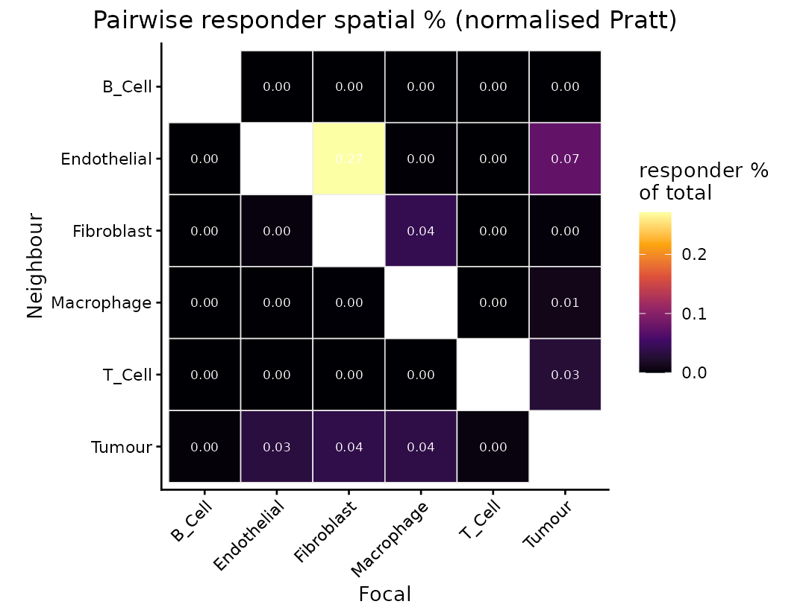
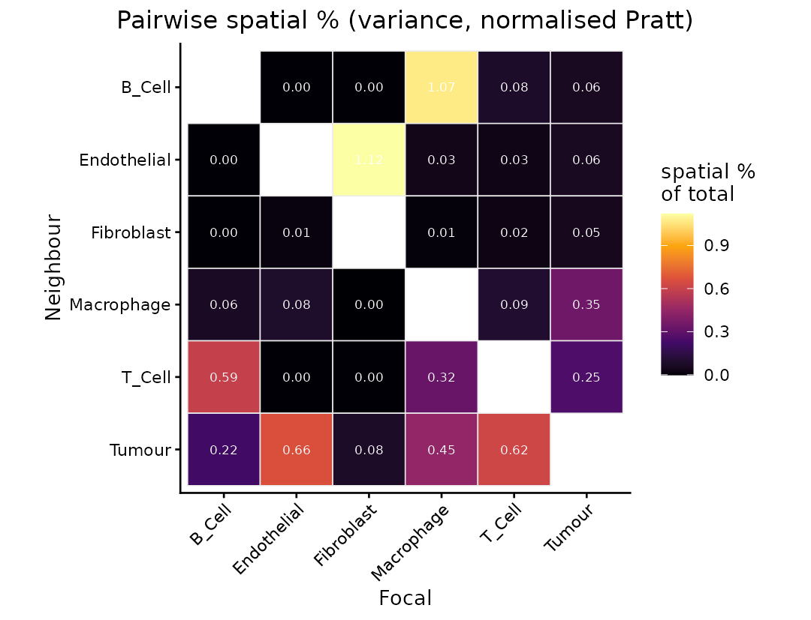
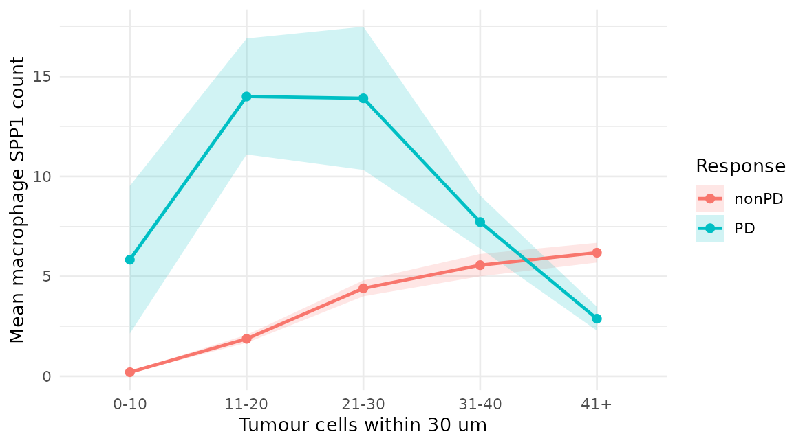

Comparing proximity effects between conditions
Elijah Willie
2026-09-09
Source:vignettes/condition.Rmd
condition.RmdIntroduction
The PACE manual fits a single section and asks how expression changes with proximity to each neighbouring cell type. This vignette asks the next question: does that proximity effect differ between two groups of patients?
Answering it needs a cohort rather than a section, and it adds one component to the model. Alongside the spatial cell state block, which is the proximity effect common to everyone, PACE estimates a responder spatial state block: the part of the proximity effect that differs between conditions. Read the two together, a gene can respond to a neighbour in both arms equally (spatial, no responder signal), or respond differently depending on outcome (responder signal).
The melanoma subset
The package ships a subset of a CosMx melanoma cohort of patients profiled after immune checkpoint blockade, contrasting progressive disease (PD) against non-progressive disease (non-PD, pooling stable, partial and complete responders).
library(PACE)
library(SpatialExperiment)
library(ggplot2)
library(dplyr)
spe <- readRDS(system.file("extdata", "mel_cosmx_subset.rds", package = "PACE"))
spe
#> class: SpatialExperiment
#> dim: 180 56274
#> metadata(0):
#> assays(1): counts
#> rownames(180): ANXA2 APOD ... WIF1 YBX3
#> rowData names(0):
#> colnames(56274): Cell52866 Cell52867 ... Cell21744 Cell21745
#> colData names(4): cellType Responder image sample_id
#> reducedDimNames(0):
#> mainExpName: NULL
#> altExpNames(0):
#> spatialCoords names(2) : x y
#> imgData names(0):
table(spe$cellType)
#>
#> B_Cell Endothelial Fibroblast Macrophage T_Cell Tumour
#> 1129 1261 1488 3101 3406 45889
table(unique(data.frame(image = spe$image, arm = spe$Responder))$arm)
#>
#> nonPD PD
#> 19 7One section per patient, so the condition contrast is between patients rather than within a section. That is what makes a cohort necessary: the effect is estimated across patients, and no number of extra cells from the same patients substitutes for it.
Every cell and every patient of the published cohort is here. What
has been reduced is the panel: 180 of the 927 genes, the most widely
detected ones, kept so the data are small enough to ship. Cells and
neighbourhoods are untouched, which is what the model reads; the
derivation is in inst/scripts/make-mel-cosmx-subset.R.
Provenance. These data are a subset of the deposit accompanying Dong, Su, Kluger, Fan and Kluger, SIMVI disentangles intrinsic and spatial-induced cellular states in spatial omics data (doi:10.5281/zenodo.14708000), used here under CC-BY-4.0.
Fitting with a condition
The call is the single-section one plus three arguments:
-
condition_colnames the column holding the contrast, and switches on the responder spatial state block. -
kernel_per_image = TRUEbuilds neighbourhoods within each section, so no cell is ever a neighbour of a cell from another patient. -
image_re = "intercept"gives each section a random intercept, so patient-level differences in overall expression are absorbed rather than being attributed to the condition.
fit <- paceFit(spe,
celltype_col = "cellType",
condition_col = "Responder",
image_col = "image",
kernel_per_image = TRUE,
image_re = "intercept",
dispersion = "nb1",
verbose = FALSE)
#> - Computing 180 x 298 likelihood matrix.
#> - Likelihood calculations took 0.04 seconds.
#> - Fitting model with 298 mixture components.
#> - Model fitting took 0.14 seconds.
#> - Computing posterior matrices.
#> - Computation allocated took 0.00 seconds.
#> - Computing 180 x 375 likelihood matrix.
#> - Likelihood calculations took 0.05 seconds.
#> - Fitting model with 375 mixture components.
#> - Model fitting took 0.25 seconds.
#> - Computing posterior matrices.
#> - Computation allocated took 0.00 seconds.
#> - Computing 180 x 579 likelihood matrix.
#> - Likelihood calculations took 0.08 seconds.
#> - Fitting model with 579 mixture components.
#> - Model fitting took 0.60 seconds.
#> - Computing posterior matrices.
#> - Computation allocated took 0.00 seconds.
#> - Computing 180 x 364 likelihood matrix.
#> - Likelihood calculations took 0.05 seconds.
#> - Fitting model with 364 mixture components.
#> - Model fitting took 0.22 seconds.
#> - Computing posterior matrices.
#> - Computation allocated took 0.00 seconds.
#> - Computing 180 x 243 likelihood matrix.
#> - Likelihood calculations took 0.03 seconds.
#> - Fitting model with 243 mixture components.
#> - Model fitting took 0.13 seconds.
#> - Computing posterior matrices.
#> - Computation allocated took 0.00 seconds.
#> - Computing 180 x 375 likelihood matrix.
#> - Likelihood calculations took 0.05 seconds.
#> - Fitting model with 375 mixture components.
#> - Model fitting took 0.29 seconds.
#> - Computing posterior matrices.
#> - Computation allocated took 0.00 seconds.
#> - Computing 180 x 364 likelihood matrix.
#> - Likelihood calculations took 0.05 seconds.
#> - Fitting model with 364 mixture components.
#> - Model fitting took 0.10 seconds.
#> - Computing posterior matrices.
#> - Computation allocated took 0.00 seconds.
#> - Computing 180 x 562 likelihood matrix.
#> - Likelihood calculations took 0.08 seconds.
#> - Fitting model with 562 mixture components.
#> - Model fitting took 0.15 seconds.
#> - Computing posterior matrices.
#> - Computation allocated took 0.00 seconds.
#> - Computing 180 x 265 likelihood matrix.
#> - Likelihood calculations took 0.04 seconds.
#> - Fitting model with 265 mixture components.
#> - Model fitting took 0.22 seconds.
#> - Computing posterior matrices.
#> - Computation allocated took 0.00 seconds.
#> - Computing 180 x 409 likelihood matrix.
#> - Likelihood calculations took 0.06 seconds.
#> - Fitting model with 409 mixture components.
#> - Model fitting took 0.60 seconds.
#> - Computing posterior matrices.
#> - Computation allocated took 0.00 seconds.
fit
#> class: PACEFit
#> cell types (6): B_Cell, Endothelial, Fibroblast, Macrophage, T_Cell, Tumour
#> kernels: h_bio = 30 um, h_tech = 5 um | contamination: percell_hc; dispersion: nb1
#> condition: Responder (ResponderPD)
#> pipeline: model -> shrink -> decompose -> drivers
#> neighbour slopes: 6480 rows (76 at lfsr < 0.05)The interaction term is named from the non-reference level of
condition_col:
fit@params$resp_term
#> [1] "ResponderPD"so ResponderPD:Tumour is the extra change in expression
per unit of tumour proximity in the PD arm, on top of the
Tumour effect shared by both arms.
The responder block in the decomposition
varianceDecomposition() now carries a
Responder spatial % column beside the
Spatial % one:
varianceDecomposition(fit) |>
group_by(focal) |>
summarise(`Spatial %` = round(median(`Spatial %`), 4),
`Responder spatial %` = round(median(`Responder spatial %`), 4),
`Spillover %` = round(median(`Spillover %`), 2),
.groups = "drop")
#> # A tibble: 6 × 4
#> focal `Spatial %` `Responder spatial %` `Spillover %`
#> <chr> <dbl> <dbl> <dbl>
#> 1 B_Cell 0.230 0.0005 12.1
#> 2 Endothelial 0.238 0.0242 13.9
#> 3 Fibroblast 0.343 0.0762 18.4
#> 4 Macrophage 0.478 0.025 19.6
#> 5 T_Cell 0.317 0.0019 13
#> 6 Tumour 0.307 0.034 3.2The responder block is far smaller than the shared spatial block, which is the expected shape: most of how a cell responds to its neighbours is common to both arms, and only a thin slice of it depends on outcome. Contamination is larger than either, and largest in the sparsely distributed immune populations.
Which pairs carry the condition difference
pairVariance() and plotPairHeatmap() both
take block = "responder", which attributes the responder
block across neighbours instead of the shared spatial one:
pairVariance(fit, block = "responder") |>
arrange(desc(val)) |>
head(5)
#> # A tibble: 5 × 3
#> focal neighbour val
#> <chr> <chr> <dbl>
#> 1 Fibroblast Endothelial 0.271
#> 2 Tumour Endothelial 0.0741
#> 3 Macrophage Fibroblast 0.0417
#> 4 Fibroblast Tumour 0.0380
#> 5 Macrophage Tumour 0.0365
plotPairHeatmap(fit, block = "responder")
Fibroblasts next to endothelium carries the largest share, with tumour and macrophage pairs behind it; the responder signal is concentrated in stromal and myeloid populations rather than spread evenly. Compare it with the shared spatial block on the same fit, where the ordering is different:
plotPairHeatmap(fit, block = "spatial")
The genes that carry it
Pair shares say where to look; neighbourSlopes() says
which genes. The ResponderPD: terms are the ones that
differ between arms:
ns <- neighbourSlopes(fit)
resp <- subset(ns, grepl("^ResponderPD:", term) & lfsr < 0.05)
nrow(resp)
#> [1] 76
resp[order(resp$lfsr), c("gene", "focal", "neighbour", "estimate_shrunk", "lfsr")] |>
head(8)
#> gene focal neighbour estimate_shrunk lfsr
#> 2053 GLUL Tumour Endothelial -0.39965573 0.000000e+00
#> 6100 SPP1 Macrophage Tumour -0.06630620 0.000000e+00
#> 5351 MX1 Tumour T_Cell 0.23157932 7.979372e-53
#> 5317 IFITM1 Tumour T_Cell 0.18729859 4.405081e-33
#> 6373 GLUL Tumour Tumour 0.01628370 2.387829e-23
#> 5226 B2M Tumour T_Cell 0.10499260 6.530095e-23
#> 5383 STAT1 Tumour T_Cell 0.14030844 2.374834e-22
#> 6401 IGFBP7 Tumour Tumour 0.01674059 6.350817e-22Among the strongest is SPP1 in macrophages next to tumour cells:
subset(ns, gene == "SPP1" & focal == "Macrophage" & neighbour == "Tumour")
#> gene focal neighbour term estimate std.error
#> 6100 SPP1 Macrophage Tumour ResponderPD:Tumour -0.06738867 0.006192822
#> estimate_shrunk sd_shrunk lfsr
#> 6100 -0.0663062 0.006056031 0The Tumour row is the response shared by both arms; the
ResponderPD:Tumour row is how much that response differs in
progressive disease. It is negative, so macrophage SPP1 rises
less steeply with tumour proximity in patients whose disease progressed.
This is the melanoma result reported in the accompanying paper,
recovered here from the shipped data.
The counts behind it, split by arm:
ct <- as.character(spe$cellType)
xy <- as.matrix(spatialCoords(spe))
mac <- which(ct == "Macrophage")
tum <- which(ct == "Tumour")
d <- data.frame(
arm = factor(as.character(spe$Responder)[mac], levels = c("nonPD", "PD")),
ntum = lengths(dbscan::frNN(xy[tum, ], eps = 30, query = xy[mac, ])$id),
spp1 = as.numeric(assay(spe, "counts")["SPP1", mac]))
d$bin <- cut(d$ntum, c(-1, 10, 20, 30, 40, Inf),
labels = c("0-10", "11-20", "21-30", "31-40", "41+"))
d |>
group_by(arm, bin) |>
summarise(mean = mean(spp1), se = sd(spp1) / sqrt(n()), .groups = "drop") |>
ggplot(aes(bin, mean, colour = arm, group = arm)) +
geom_ribbon(aes(ymin = mean - se, ymax = mean + se, fill = arm),
alpha = 0.18, colour = NA) +
geom_line(linewidth = 0.9) +
geom_point(size = 2) +
labs(x = "Tumour cells within 30 um", y = "Mean macrophage SPP1 count",
colour = "Response", fill = "Response") +
theme_minimal(base_size = 11)
In non-progressive disease macrophage SPP1 climbs with
tumour proximity; in progressive disease it does not. That divergence is
what the negative ResponderPD:Tumour coefficient
measures.
Session info
sessionInfo()
#> R version 4.6.1 (2026-06-24)
#> Platform: x86_64-pc-linux-gnu
#> Running under: Ubuntu 24.04.4 LTS
#>
#> Matrix products: default
#> BLAS: /usr/lib/x86_64-linux-gnu/openblas-pthread/libblas.so.3
#> LAPACK: /usr/lib/x86_64-linux-gnu/openblas-pthread/libopenblasp-r0.3.26.so; LAPACK version 3.12.0
#>
#> locale:
#> [1] LC_CTYPE=C.UTF-8 LC_NUMERIC=C LC_TIME=C.UTF-8
#> [4] LC_COLLATE=C.UTF-8 LC_MONETARY=C.UTF-8 LC_MESSAGES=C.UTF-8
#> [7] LC_PAPER=C.UTF-8 LC_NAME=C LC_ADDRESS=C
#> [10] LC_TELEPHONE=C LC_MEASUREMENT=C.UTF-8 LC_IDENTIFICATION=C
#>
#> time zone: UTC
#> tzcode source: system (glibc)
#>
#> attached base packages:
#> [1] stats4 stats graphics grDevices utils datasets methods
#> [8] base
#>
#> other attached packages:
#> [1] dplyr_1.2.1 ggplot2_4.0.3
#> [3] SpatialExperiment_1.22.0 SingleCellExperiment_1.34.0
#> [5] SummarizedExperiment_1.42.0 Biobase_2.72.0
#> [7] GenomicRanges_1.64.0 Seqinfo_1.2.0
#> [9] IRanges_2.46.0 S4Vectors_0.50.2
#> [11] BiocGenerics_0.58.1 generics_0.1.4
#> [13] MatrixGenerics_1.24.0 matrixStats_1.5.0
#> [15] PACE_0.99.1 BiocStyle_2.40.0
#>
#> loaded via a namespace (and not attached):
#> [1] gtable_0.3.6 rjson_0.2.23 xfun_0.60
#> [4] bslib_0.12.0 lattice_0.22-9 vctrs_0.7.3
#> [7] tools_4.6.1 parallel_4.6.1 tibble_3.3.1
#> [10] pkgconfig_2.0.3 Matrix_1.7-5 SQUAREM_2026.1
#> [13] RColorBrewer_1.1-3 S7_0.2.2 desc_1.4.3
#> [16] assertthat_0.2.1 lifecycle_1.0.5 truncnorm_1.0-9
#> [19] compiler_4.6.1 farver_2.1.2 textshaping_1.0.5
#> [22] codetools_0.2-20 htmltools_0.5.9 sass_0.4.10
#> [25] yaml_2.3.12 tidyr_1.3.2 pillar_1.11.1
#> [28] pkgdown_2.2.1 jquerylib_0.1.4 BiocParallel_1.46.0
#> [31] rmeta_3.0 cachem_1.1.0 DelayedArray_0.38.2
#> [34] dbscan_1.2.6 magick_2.9.1 abind_1.4-8
#> [37] tidyselect_1.2.1 digest_0.6.39 mvtnorm_1.4-2
#> [40] purrr_1.2.2 bookdown_0.48 ashr_2.2-63
#> [43] labeling_0.4.3 fastmap_1.2.0 grid_4.6.1
#> [46] cli_3.6.6 invgamma_1.2 SparseArray_1.12.2
#> [49] magrittr_2.0.5 S4Arrays_1.12.0 utf8_1.2.6
#> [52] withr_3.0.3 scales_1.4.0 rmarkdown_2.32
#> [55] XVector_0.52.0 otel_0.2.0 ragg_1.5.2
#> [58] evaluate_1.0.5 knitr_1.52 viridisLite_0.4.3
#> [61] irlba_2.3.7 rlang_1.3.0 Rcpp_1.1.2
#> [64] mixsqp_0.3-54 glue_1.8.1 BiocManager_1.30.27
#> [67] jsonlite_2.0.0 plyr_1.8.9 mashr_0.2.79
#> [70] R6_2.6.1 systemfonts_1.3.2 fs_2.1.0